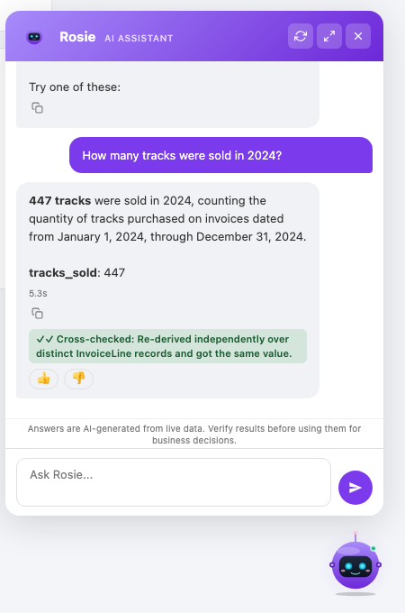
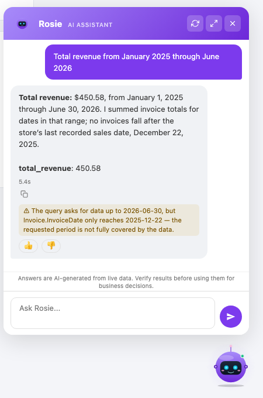

Rosie turns plain-language questions into SQL, runs them read-only on your own servers, and then checks the answer for the errors that raise no error. What was checked, what it found and what it could not check are shown next to the number.
Start a pilot See the numbers

A query that fails gets fixed. A query that runs and returns a plausible number gets pasted into a slide. On the public sample database we test with, one extra join does this, with no error and no warning from the database:
Total revenue as the query returned it. The join repeats each invoice once per line item, so every invoice is counted several times.
The same total re-derived by Rosie over distinct invoices. The answer is marked
CONTRADICTED and both figures are shown.
Detects joins that repeat rows under a sum or a count, and recomputes the figure a second way.
"Sales in Oporto" returns zero because the data says "Porto". Rosie checks the value exists and says which ones do.
"This year" when the last record is from June is half a year. The answer says so.
A condition every row satisfies is usually not the condition that was meant.
Declare "revenue" once, or import it from dbt or Cube. Answers that compute it differently are flagged.
It checks the structure of the calculation, not whether the question was understood. A misread question passes every check. When a check cannot run, the answer says "not checked" and why.
Our own regression suite: 194 questions over a public sample database, the same bank on each engine, one pass. "Passed" means the answer met the suite's weighted criteria, not exact-match accuracy. 34 of the questions are traps built from the error classes the certificate covers.
| MySQL 8.4 | PostgreSQL 16 | SQL Server 2022 | |
|---|---|---|---|
| Questions passed | 191 of 194 | 187 of 194 | 192 of 194 |
| Requests that must be refused, refused | 20 of 20 | 19 of 20 | 20 of 20 |
| Trap questions | 34 | 34 | 34 |
| Trap answers that went out with no warning | 0 | 0 | 0 |
| Model cost of the whole run | US$ 0.12 | US$ 0.14 | US$ 0.13 |
We wrote that suite, so we also ran one we did not write. On BIRD Mini-Dev (2026 update: 500 public questions, 11 databases, no tuning) Rosie scores 54.4% execution accuracy, against the 51.8% baseline the dataset lists for the same model. On that benchmark almost all errors are misread questions, which the certificate does not catch: it flagged 10 of 214 wrong answers. Both results, the misses and the commands to rerun them are in the documentation.
Put the widget in your product with one tag, under your own name and colours. Or connect Claude, Cursor and other AI clients through the MCP server, so an agent gets checked answers instead of raw database access.
<script src="/api/assistant/widget.js"></script> <rosie-widget api-url="/api/assistant"></rosie-widget>
The setup wizard builds everything Rosie needs from your database: the catalog, the masked columns, the instructions, example queries validated against your data and a first question bank. About a minute and a half on the sample database.
npm run init -- --url postgres://user:pw@host/db \
--name "My Project" --create-ro-user
npm run doctor
npm start
We install Rosie next to one of your databases, build a question bank from what your teams actually ask, and report how many it answers correctly and what the certificate caught. You keep the report whatever you decide.
Talk to us about a pilot